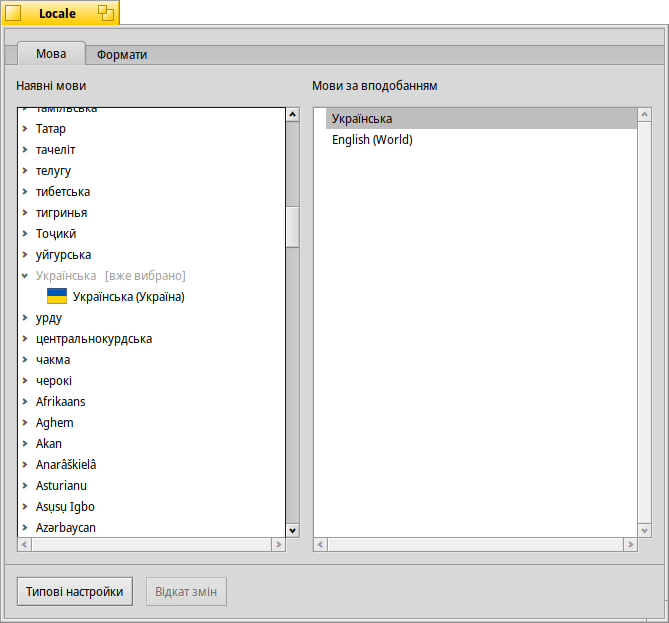
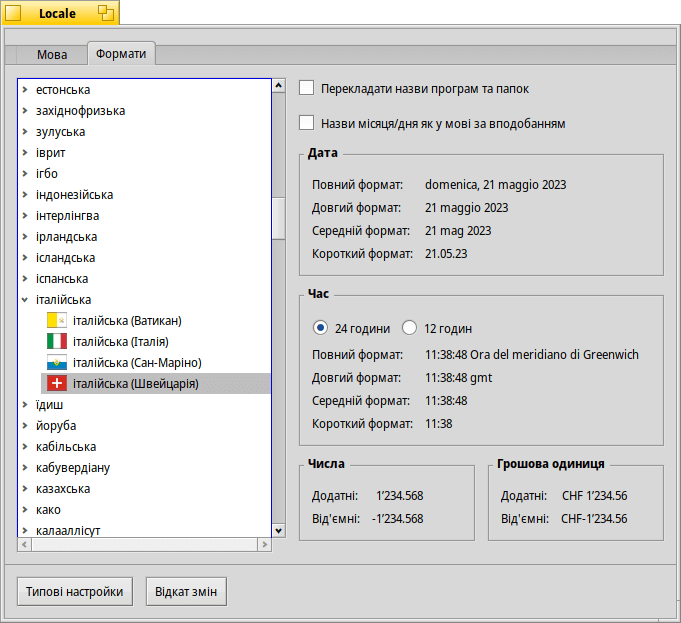

Locale (Локаль)
| Deskbar: | ||
| Розташування: | /boot/system/preferences/Locale | |
| Налаштування: | ~/config/settings/Locale settings |
Система локалізації Haiku передбачає не лише заміну текстів їхніми перекладами, а й складніші завдання, такі як форматування чисел, дат і часу відповідно до Ваших регіональних налаштувань.
 Мова
Мова
Haiku перекладено на десятки мов, на жаль, деякі переклади ще не завершені. З цієї причини Ви можете додати кілька мов у список «Мови за вподобанням». Якщо в перекладі відсутній якийсь текст, він буде замінений словами наступної обраної мови. За замовчуванням використовується англійська мова (навіть якщо її немає у списку).
У цьому прикладі мовою за вподобанням встановлено українську. Резервного варіанта немає, і якщо переклад відсутній, за замовчуванням повертається англійська.
Як Ви можете бачити, розгорнувши мовний запис у списку ліворуч, Ви побачите підзаписи для конкретних варіацій або діалектів мови (якщо вони доступні).
Формати
На вкладці Ви можете встановити формати дати, часу, чисел і грошової одиниці незалежно від вибраної Вами мови за вподобанням.
Можливо, Ви іспанець, який живе в італомовній частині Швейцарії. Отже, в системі встановлена мова за вподобанням іспанська, але цифри та грошова одиниця у форматі, як у Вас на роботі: швейцарський/італійський.
Якщо Вам зручніше користуватися іспанськими назвами днів і місяців (згадайте, наприклад, змінені дати файлів), Ви можете встановити такий формат, увімкнувши опцію .
Звичайно, наведений вище приклад, можливо, не є найпоширенішим сценарієм, але він демонструє гнучкість системи.
Інша опція – . Вимкніть цю опцію, якщо Ви бажаєте, щоб графічний інтерфейс було локалізовано, але при цьому збережено оригінальні англійські назви панелей налаштувань, програм і стандартних папок.
Зміни застосовуються негайно, хоча поточні запущені програми можуть потребувати закриття і перезапуску для того, щоб відобразились нові настройки.
| повертає все до стандартних (типових) значень. | ||
| повертає настройки, які були встановлені до запуску Locale. |